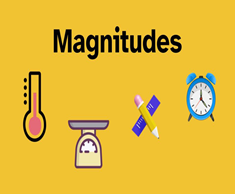

Diccionario
La nube

- Definición
-
Conocida también como computación en la nube o nube de cómputo (traducción del término inglés cloud computing), incluso informática o servicios en la nube, es una red de dispositivos informáticos remotos conectados a internet para prestar diversos tipos de servicios de manera virtual cuando se accede a ellos.
- Ejemplo
-
Habitualmente guardo una copia de seguridad de mis contactos en la nube porque así no la pierdo.
Magnitud

- Definición
-
Propiedad de los objetos que se puede medir.
- Ejemplo
-
Hicimos un experimento en clase para comprobar la relación entre las magnitudes longitud y tiempo.
Smart City
- Definición
-
También llamada ciudad inteligente por su traducción al español, es una ciudad que utiliza los avances tecnológicos y las tecnologías de la información y la comunicación (TIC) para mejorar la calidad de vida de sus habitantes mediante la aplicación de soluciones eficientes y sostenibles que permitan una participación ciudadana interactiva y comprometida con su entorno.
- Ejemplo
-
Las ciudades más importantes de país se quieren convertir en Smart Cities para mejorar la vida de sus habitantes de una forma sostenible y respetuosa con el medioambiente.
ThingSpeak

- Definición
-
Es una Interfaz de programación de aplicaciones (API por sus siglas en inglés) para el Internet de las Cosas que permite almacenar, recopilar y analizar datos de objetos conectados a través de Internet.
- Ejemplo
-
Voy a usar ThingSpeak para registrar los datos del sensor de temperatura de la estación meteorológica del instituto.